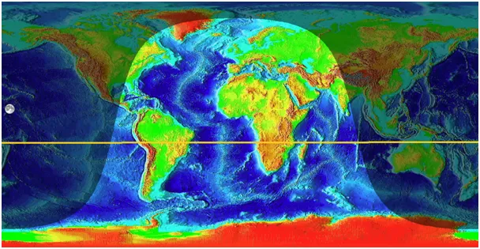
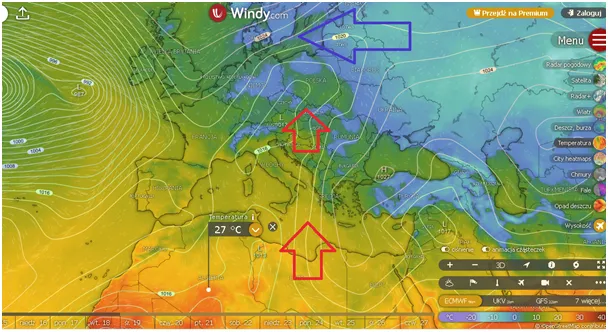
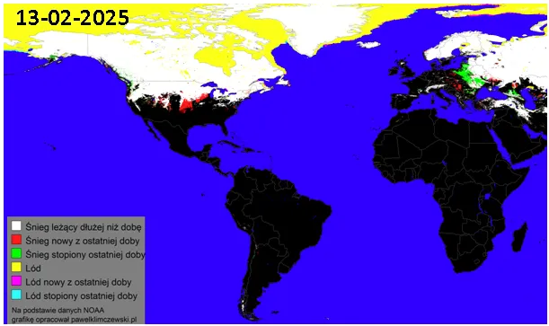

Generał zima wraca do Moskwy, śnieg na zachodzie to ruchy taktyczne.
Słońce powoli opuszcza Madagaskar i jego zenit wędruje na północ. Już ma tylko 13 stopni do równika i zaczyna ogrzewać północną Afrykę na tyle mocno, że powietrze nad Saharą ma w południe już ponad 30 stopni Celsjusza. Przy odpowiednich cyrkulacjach dociera ono do Europy, a przez Bramę Morawską i do Polski.

Niestety po drodze powietrze to w zjawisku fenu (halny) traci wilgoć, tak bardzo nam potrzebną. Zgodnie z planem większe ocieplenie po 20 lutym, ale już teraz doświadczamy jego zapowiedzi. Europa Wschodnia traci swą śnieżną pokrywę, która będzie co kilka dni wracać, bo aura zaczyna być coraz bardziej marcowa, a wiadomo: "w marcu jak w garncu" .

Od zachodu już opady nowego śniegu, to rekompensata wilgoci znad Atlantyku, bez tego śniegu nie będzie sopli tak bardzo przypominających, że zima się kończy.
Paweł Klimczewski